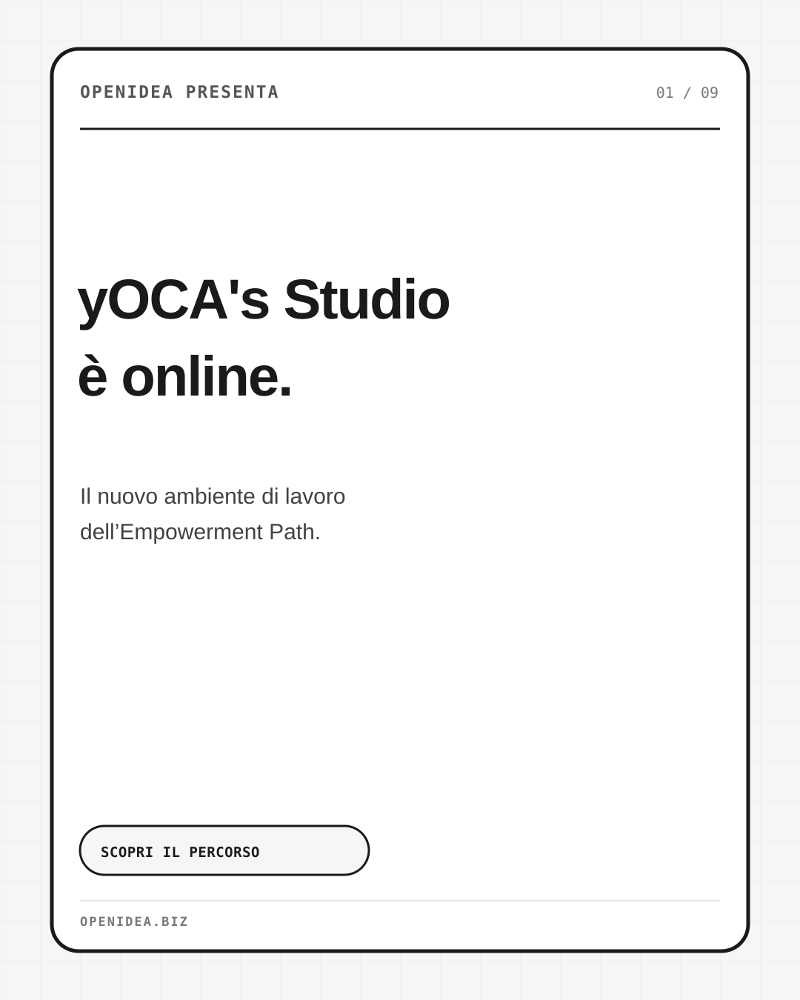
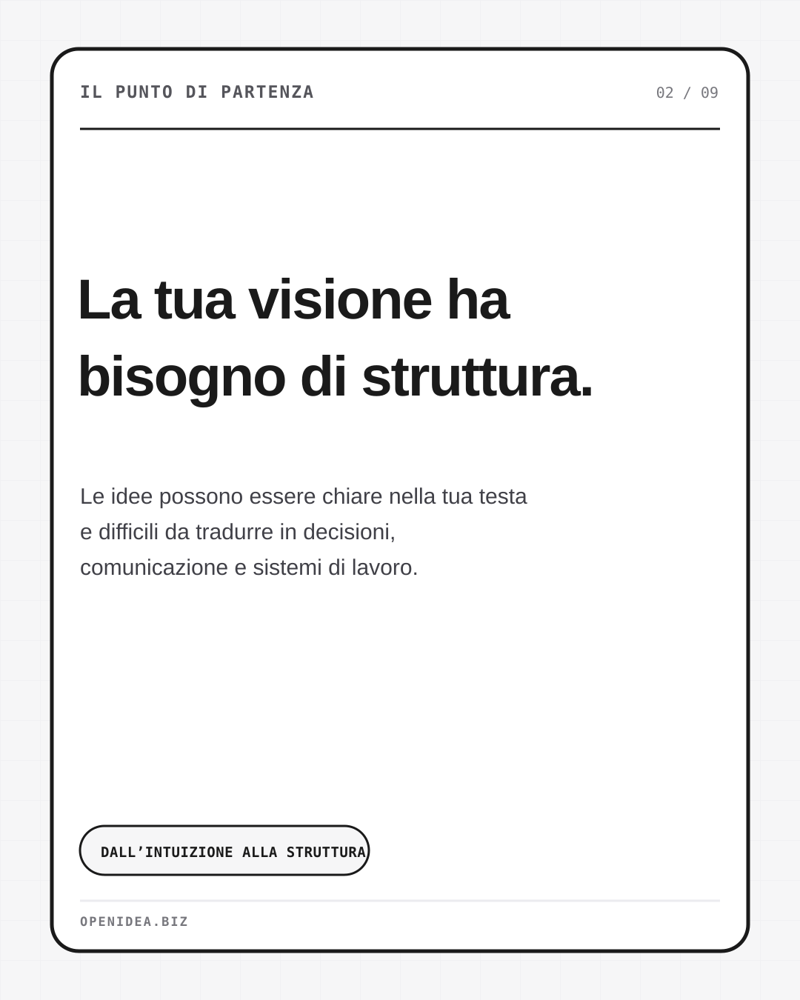
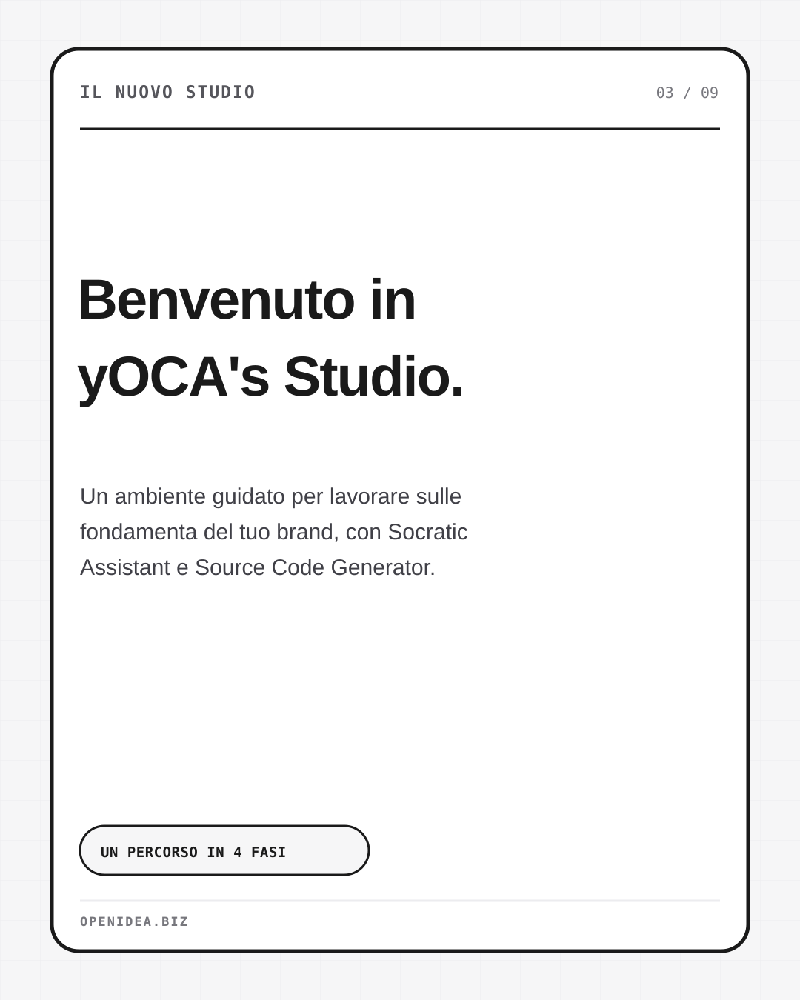
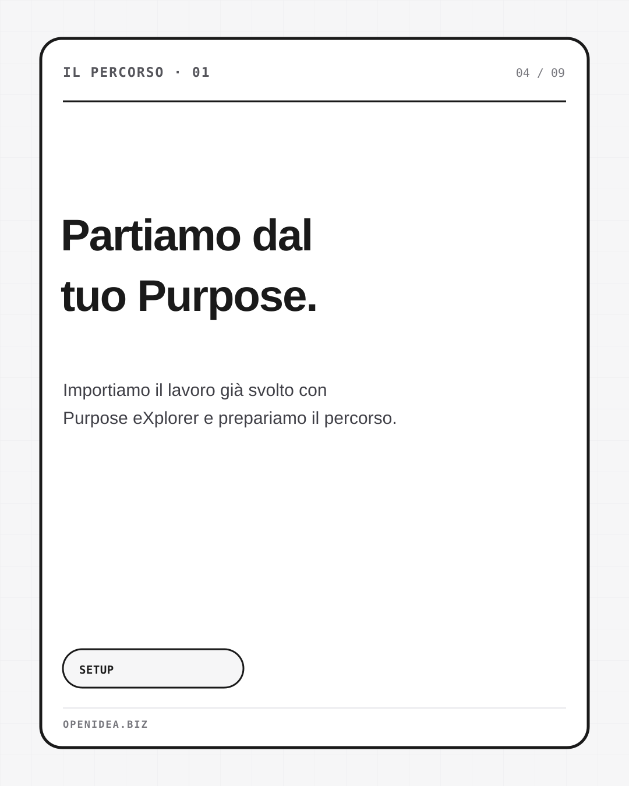
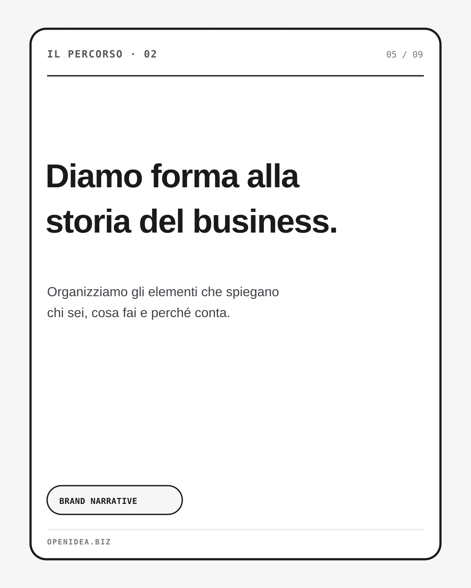
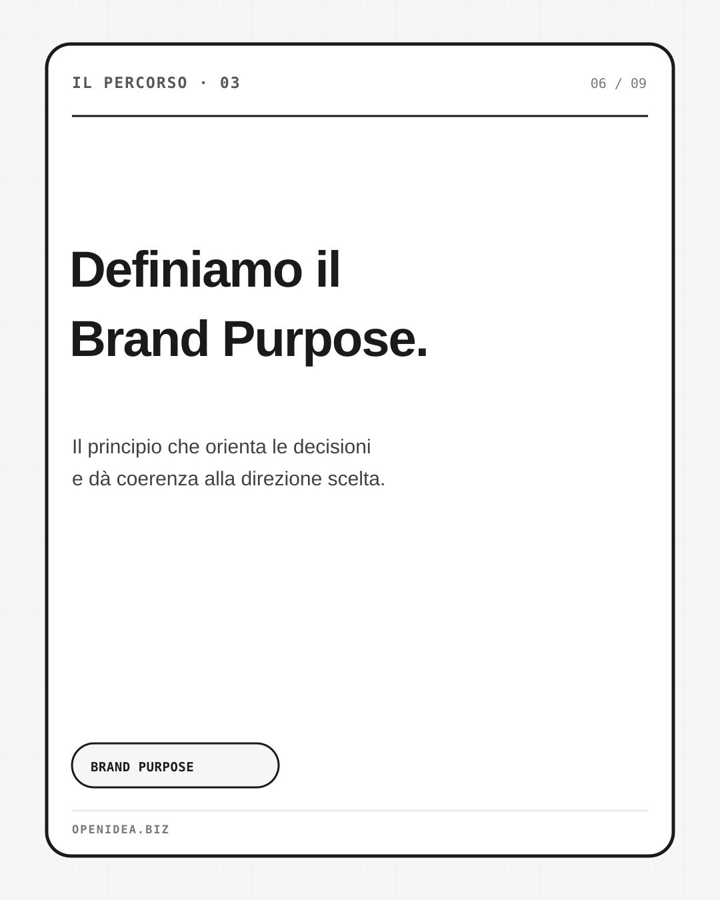
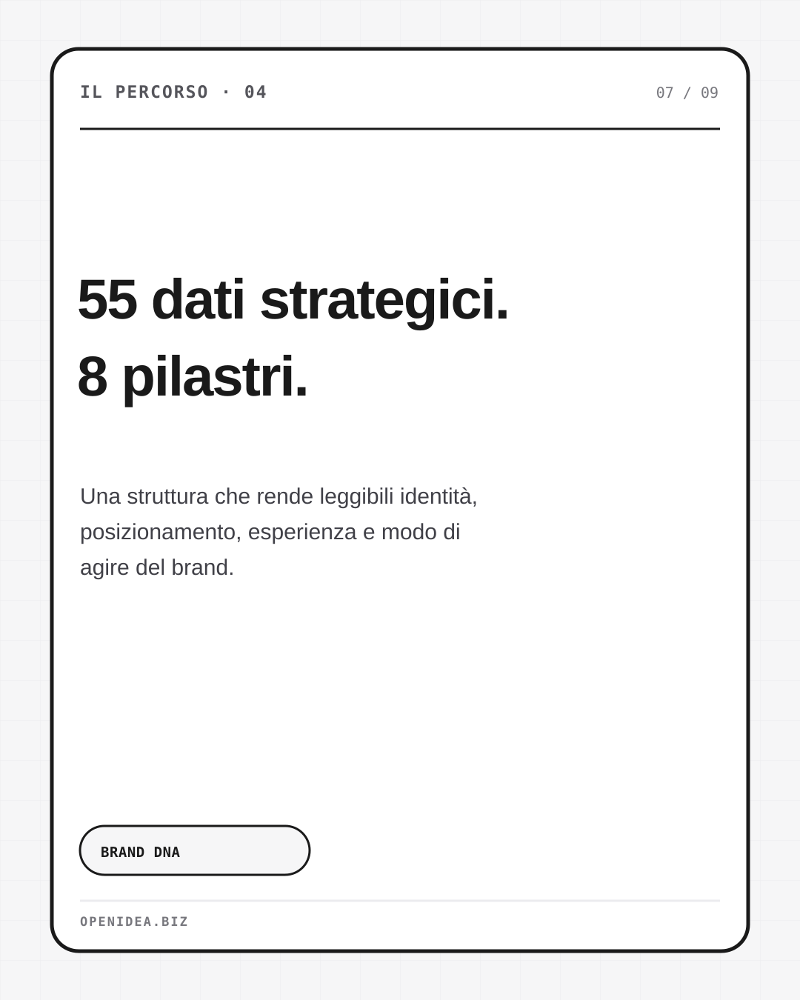
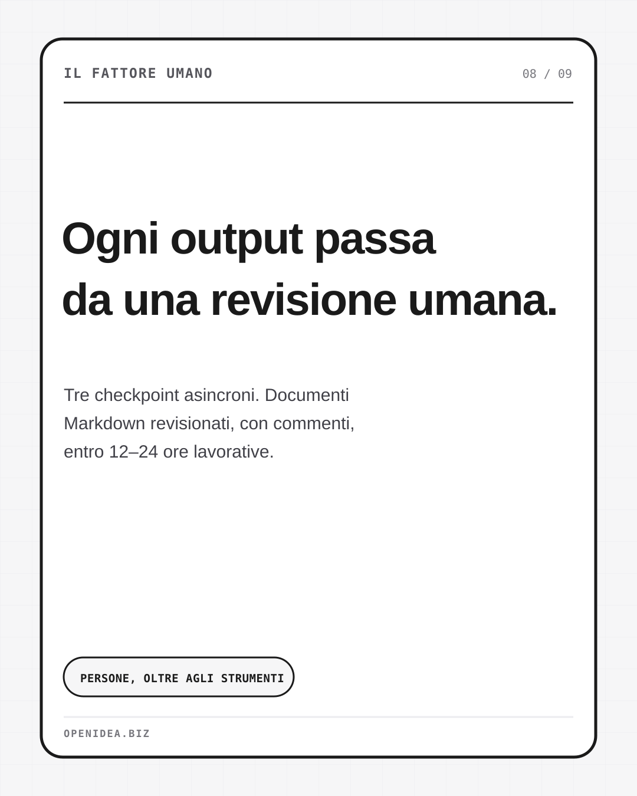
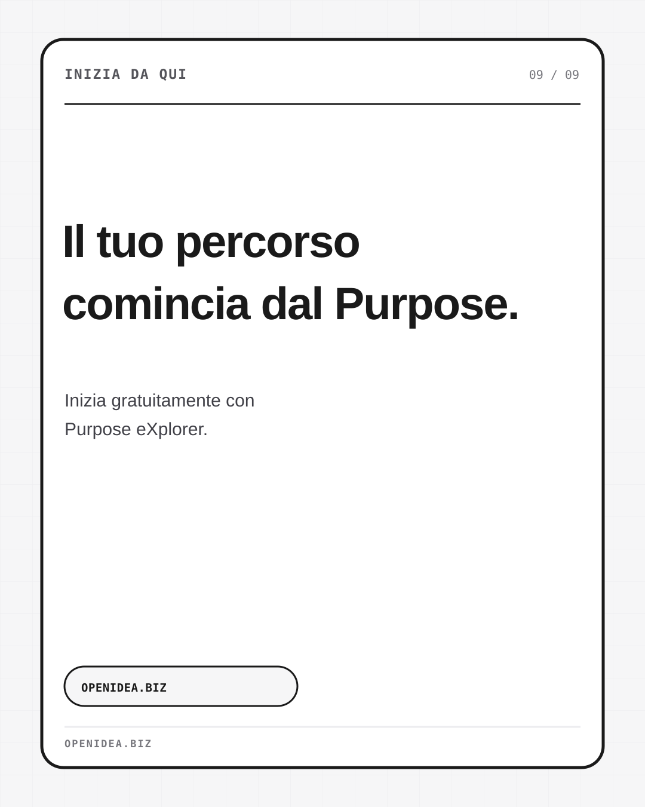

Anteprima del carosello di lancio. Gli asset ufficiali sono caricati dalla repository openideabiz/yoca-engine, al commit fissato nel Brand Design. Per visualizzare le immagini serve una connessione internet.